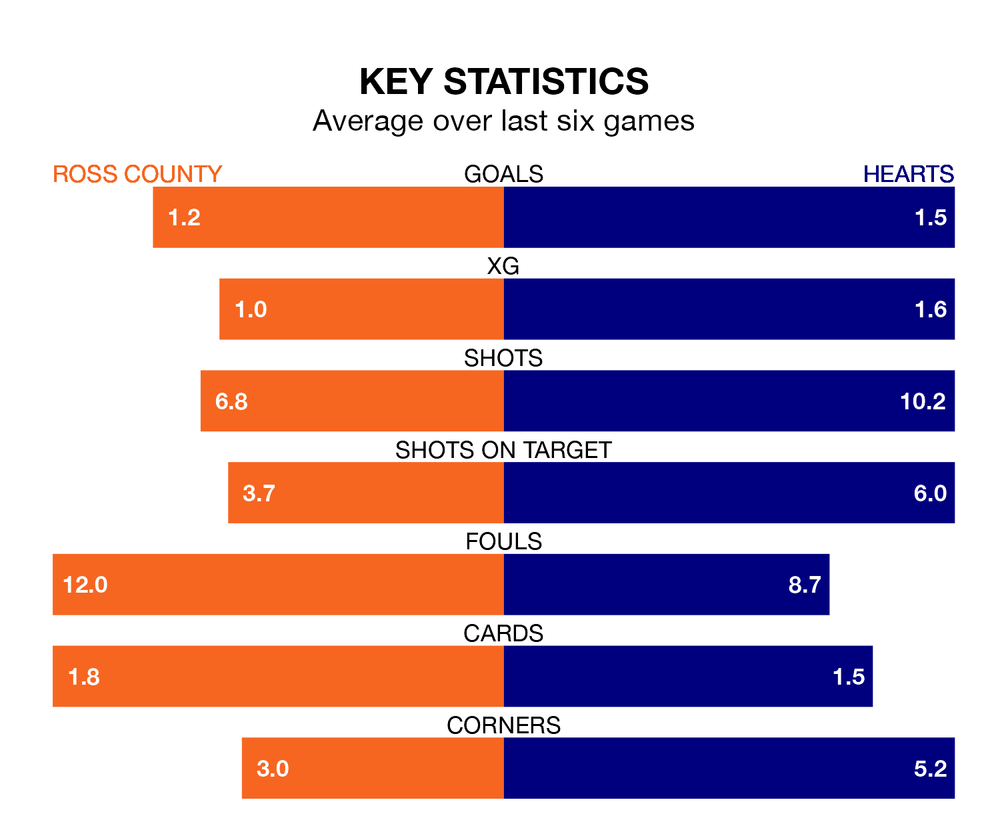

Relegation candidates Ross County face a challenge against high-flying Hearts at the Global Energy Stadium on Saturday.
Ross County are 11th in the Premiership table, and have picked up five wins and nine draws in their 29 games to date.
Hearts, meanwhile, are third in the standings with 55 points, having won 17 and drawn four, and are 15 points behind table-toppers Rangers.
In Lawrence Shankland, Hearts have the league's sharpest shooter so far this season. He has notched 20 goals in 29 appearances.
His goal rate of one every 130 minutes is much quicker than that of Simon Murray, Ross's top scorer with a goal every 309 minutes, and a total of seven goals in 28 games.
In the last 10 years, Ross and Hearts have played each other on 22 occasions. Ross won one of them, Hearts 10, and they drew 11 times.
On average, the Staggies scored 0.7 goals and Hearts 1.5 in those matches.
Their last meeting was on December 30, when they played out a 2-2 draw.
With 26 goals in 29 games so far this season, County are the league's third-lowest scorers with 0.9 goals per game. And they are conceding more than average, letting in 50 goals at a rate of 1.7 per game.
The away team, meanwhile, are average scorers, with 1.3 goals per game. They have conceded 1.0 goal per game.
The Staggies are in disappointing form in the Premiership, with one win and two draws from their last six games.
With four wins and a draw over that period, Hearts's form is much better – they have taken 13 points from 18, compared to the hosts' five.
Ross's last match was on Wednesday, a 2-2 draw against Hibernian, with Joshua Sims and Yan Dhanda getting the goals for the Staggies.
Hearts beat Celtic 2-0 last time out, on March 3, with Jorge Grant and Shankland on the scoresheet.
Saturday's match will be refereed by Grant Irvine, who has taken charge of seven Premiership games so far this season, issuing two red cards and booking 18 players. He has awarded three penalties.
The last Ross game Irvine refereed was a 2-2 away draw with Hibernian on October 31. His last Hearts match was their 1-0 loss at home against Motherwell on September 3.
Updated: 15:10 (UTC), 15/03/24